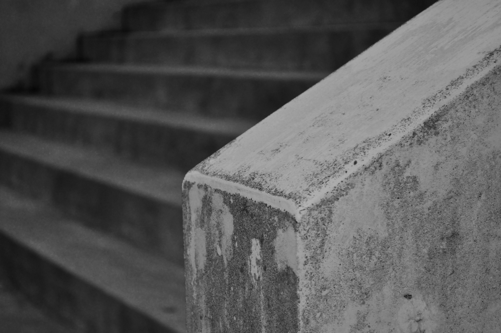
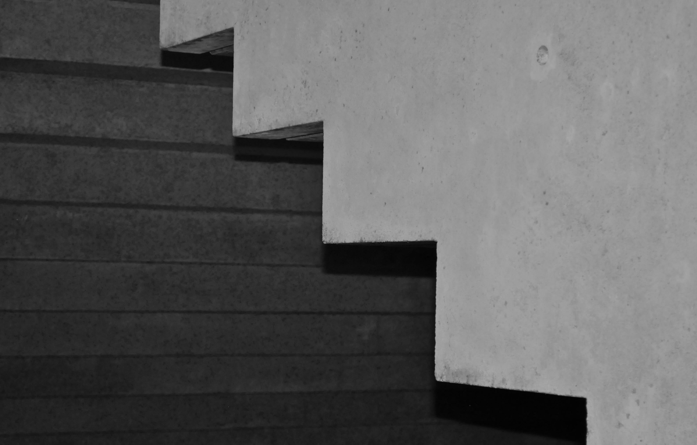
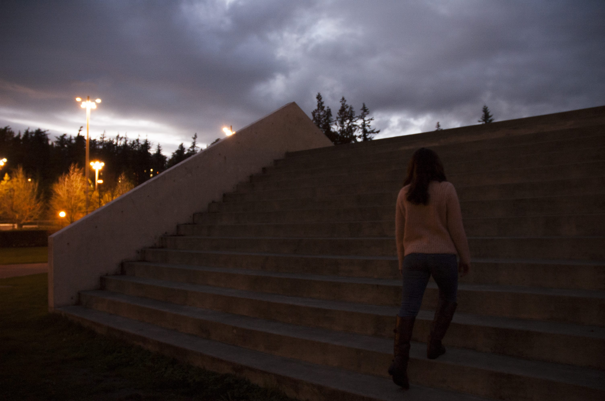
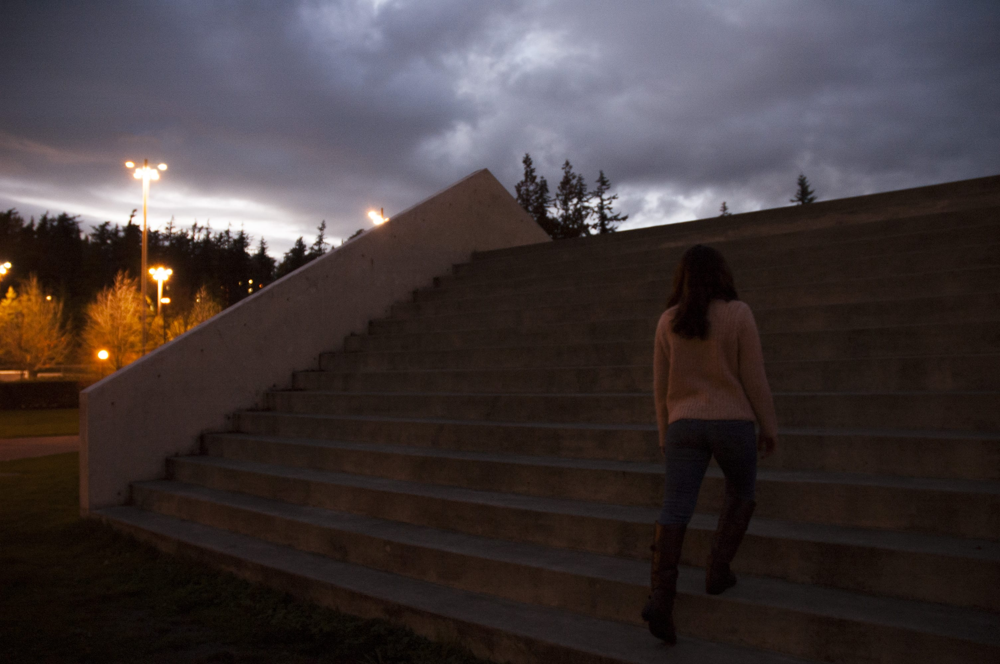
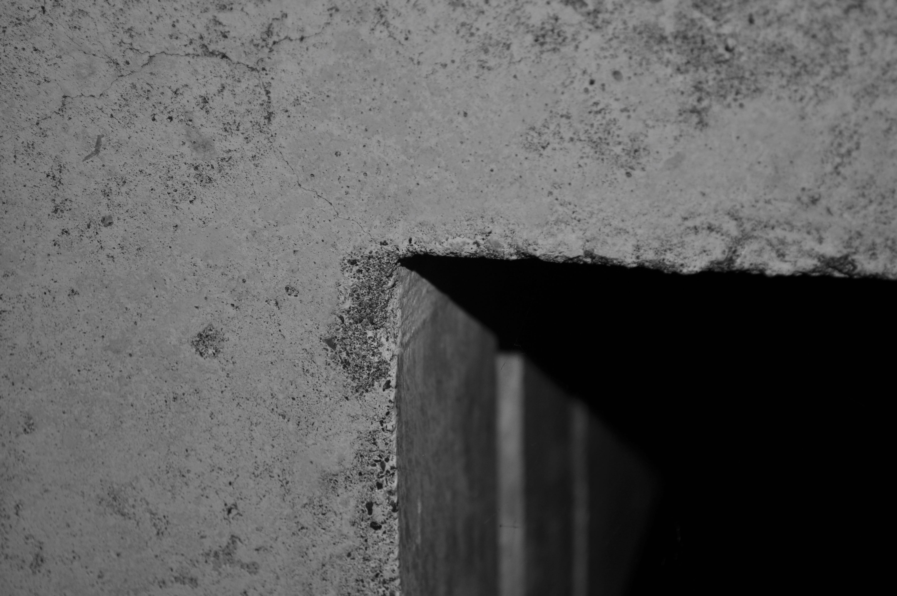
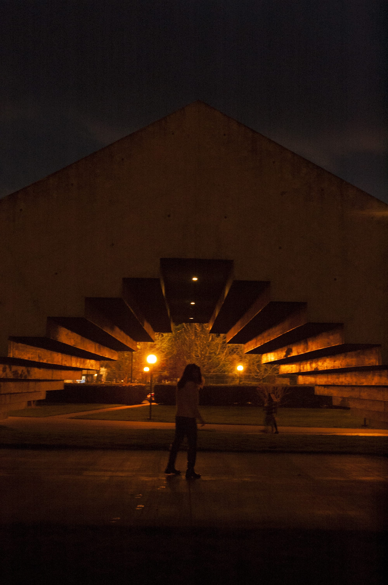

Stadium piece "Stairs to nowhere"
Walk around the sculpture with Google Street View
Interaction and experience that is created within this piece


 


Bruce Nauman’s Stadium Piece has been on Westerns campus since 1980.
The students refer to this artwork as “The Stairs to Nowhere.” Because it is in the shape of an “M,” it stands out from any other staircase that you have seen. Students can easily relax on the steps or even in the dip of the piece to have privacy. With open space underneath being lit up, it is a prime location to hide from the rainy Bellingham weather while still doing homework or studying outside. Because he designed for this sculpture to be on a university’s campus, it is great that it has been embedded into the lives of the students that attend this school.
Placeholder